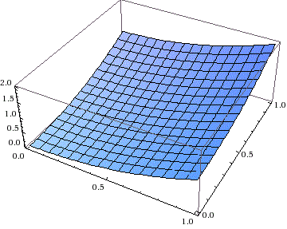
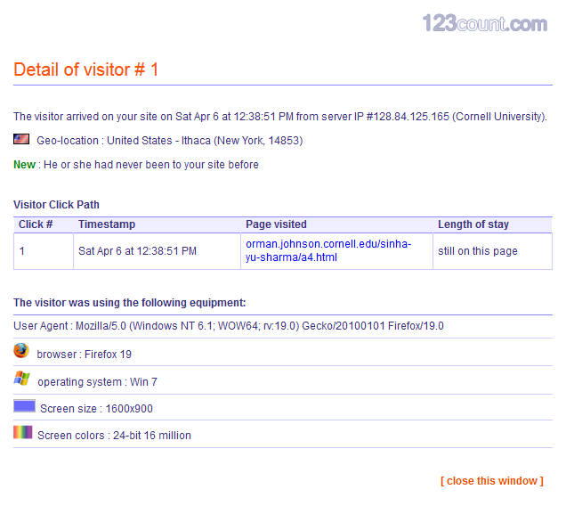
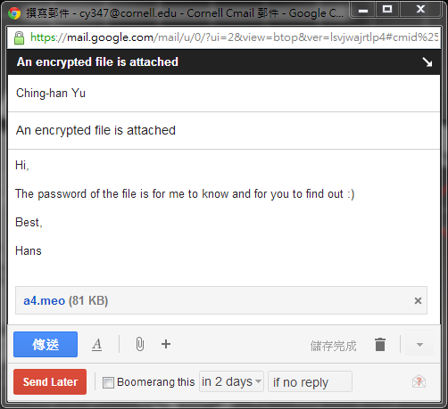
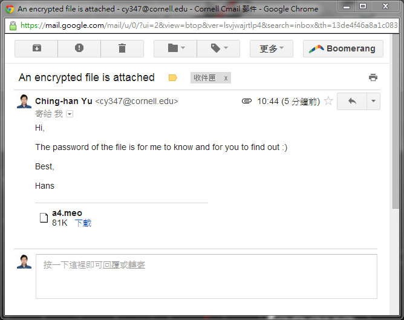
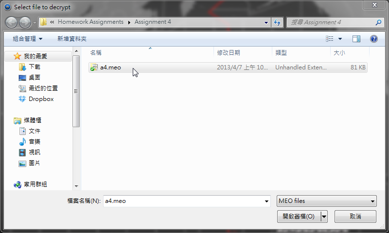
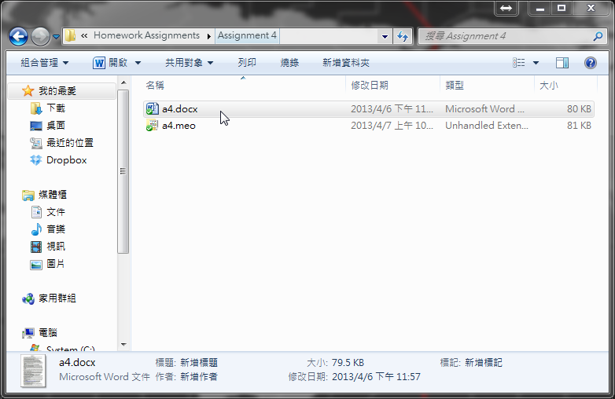
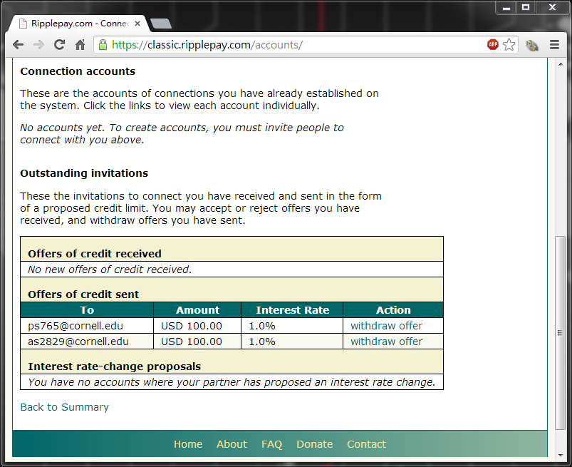

TransformIT
Building the future of IT

Assignment 4
Q1. a. Create an electronic
check. Post the submitted checks to a checklist on your page.
You don’t have to submit to a bank database, as you have done
that in Assignment 2.
b. Create an electronic account summary
containing your checking account balance. Write a script to
deduct the amount of each check from your account balance.
c. Test for a negative account balance, and
issue a warning for overdrawn accounts.
A1. a., b. and
c. An electronic check
with account summary and overdrawn warning. (Only supported by Microsoft Internet Explorer)
Q2. Add a script to your electronic check to
guide users in filling out their electronic checks.
A2. Please refer to A1. above.
Q3. a. Privacy has economic
value to consumers. Give three possible reasons and briefly
explain. b. Can your business benefit from your
customers’ inability to protect their privacy? Explain how.
A3. a.
b.
Q4. Access WebMathematica software on the
web. Use their
plotting software to create a 3D plot, or
alternatively use their regression software to do linear
regression. Copy the results to your a4 document.
A4.

Figure 3. A 3D Plotting generated by WebMathematica
Q5. a. Explain how
Application Service Providers (ASP’s) can create a new rental
computing paradigm, and list the reasons why it may be desirable
to software sellers. b. Read the article on
Rental Computing and explain how Microsoft’s patented approach
is different from the ASP model. c. Explain how
rental computing in general can be used as a tool of price
discrimination. d. Can you rent any of your
services in your business, instead of selling them? Explain why
it may be desirable? If not, give an example from another
business.
A5. a.
b.
c.
d.
Q6. Add a script to your a4 document to
collect statistics about your users. Generate a report
containing the number of visitors per day, or the geographical
locations of your visitors, and copy it to your web page.
A6. The statistics about the visitors of this
site.

Figure 4. The detailed information of a visitor
Figure 5. A live visitor map
Q7. Create a page with a password script to
be the main entry page of your web site, and to password protect
your a1 page. Alternatively, add a cookie script to your a4
page, to keep track of repeat visitors and to print a message
for repeat visitors. Alternatively, find out what cookies were
placed on your computer, and who placed them. Provide a partial
list.
A7. Please refer to the
link for our answer to
Q7.
Q8. Install Meo encryption software. Encode
one of your files. Email the file to yourself as an attachment,
and decode it. Provide a screen shot of the email.
Alternatively, get a public/private key pair from pgp.com,
install it on your computer, and start sending secure email with
signature for integrity and envelope for privacy. Provide a
screen shot of your email. Alternatively, get an account at
self-destructing-email.com and send secure email. Set the email
to self-destruct after it has been read once; and also to
retract it after you sent it, but before it has been read.
Provide a screen shot of your email settings.
A8. Please refer to the following screen shots.

Figure 6. An E-mail
to be sent with an encrypted attachment

Figure
7. A received E-mail with an encrypted attachment

Figure 8. The decryption of an encrypted file

Figure 9. The decrpyted file
Q9. a. Read the article on
Amazon’s web services and explain how it is being used as a
component in other businesses, and give an example from the
article. b. Can web services lead to second
mover advantages for new business models, and how? c.
Can you use Amazon’s web services in your business? How? Give an
example. If not, give an example of a business that can use
Amazon’s Web Services.
A9. a.
b.
c.
Q10. a. Read the article
titled
Tracking with Cookies. Explain what information BlueKai
Exchange collects about consumers and what it does with it.
b. How do web sites sometimes inadvertently
place cookies on their visitors’ computers? Give an example from
the article. c. How can a web site show you ads
relevant to you the first time you visit that web site? Give an
example from the article or the lecture notes. d.
Can you identify some potential customers of your business from
the web sites they visited? Explain what web sites and why.
A10. a.
b.
c.
d.
Q11. Download Electronic cash system Bitcoin
at http://www.bitcoin.org and acquire some free coins at
https://freebitcoins.appspot.com. See if there is anything
you can buy with your free coins. Provide a screen shot of your
wallet containing your free coins on your a4 page. (Note:
Getting free coins may require a wait of one day)
A11.
Q12. a. Convert the static
data table from Assignment 2 to an XML file, and reorganize your
data into a non-table form and apply conditional styling to it.
b. Insert a live Excel spreadsheet to your a4
page. Add color to your Excel spreadsheet with conditional
formatting before you put it on your web page. c.
Insert a Flash animated navigation bar to your a4 page.
Alternatively, insert a shopping cart into your a4 page.
A12. a. The XML static data
table is as follows.
Table 1. An XML static table with conditional formattings
b. A live spreadsheet showing global temperature variation in decades is as follows.
Table 2. A live Excel spreadsheet
c. Please refer to the link for our answer to Q12. c.
Q13. a. Signup for Ripple
electronic currency and payment system at
https://classic.ripplepay.com. Invite your teammate to also
join, and extend some credit to your teammate. Once your
teammate accepts the credit, ask for a payment and receive it.
Provide a screen shot of the credit you extended to your
teammate, and the payment you received from your teammate.
b. By extending credit to your teammate, did
you just create money? Explain. c. Explain how
you can make a payment to a stranger in Ripple who doesn’t trust
you and accept your credit. d. Could Ripple
become a major payment system? What are its advantages over
other electronic payment systems? Explain.
A13. a. The screen shots are
as follows.

Figure 10. The extended credits to teammates
Figure 11. Payments received from teammates
b. No. Since all money in Ripple is explicitly represent as "debts," with transactions simply consisting of balances being shifted on a series of imaginery credit lines from the payer to the receiver. We do not create money but debts.
c. Making a payment to a stranger gets interesting when we consider the second major feature of Ripple: payment routing. This work through trusted intermediares. Assume a person A wants to pay person C for some merchandise, but C does not trust A with a credit line. However, ther might be able to treade if person B, who is trusted by both A and C, acts as an intermediary between them. A will write an IOU to B, increasing his obligations towards him, while B will write the same amount of IOU to C. Therefore, A can pay C without C needing to trust A.
d. Yes, it could. Human beings have evolved trust relationships with other human beings but not insitiutions such as banks. In order to keep account holders being paided on demand and loans are made only to creditworthy individuals, banks hires millions of people to manage the trust relationships which give value to national currencies, and a gargantuan legal framework of bureaucrats is thus unavoidable. However, Ripple currency is underpinned by natural trust relationships that already exist within families or friends. Bureaucrats and coercive legal frameworks are completely optional. Ripple currency has value because people value their relationship with other people, i.e., it's financial capital is backed by social capital. The major difference between Ripple currency and other virtual currencies is its decentralized payment network. Ripple is not an institution, it is a tool.
Q14. a. Signup for
http://prezi.com
and create a presentation with text and pictures, where you can
put all of your slides on one page, and then zoom in and out of
specific slides in arbitrary order, using JavaScript. b.
Create a page that uses AJAX to periodically refresh part of the
page without reloading the whole page.
A14. a.
b.
Instructions
This is a mock website for the course NBA 6010 - Electronic Commerce given by Prof. Levent V. Orman at Samuel Curtis Johnson Graduate School of Management, Sage Hall, Cornell University, Ithaca, NY 14853-6201.
Team Members:
Amrisha Sinha, Ching-han Yu, and Pranjal Sharma